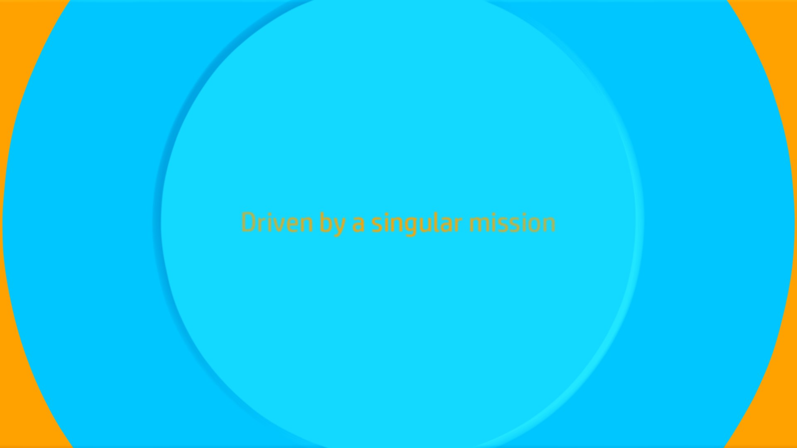
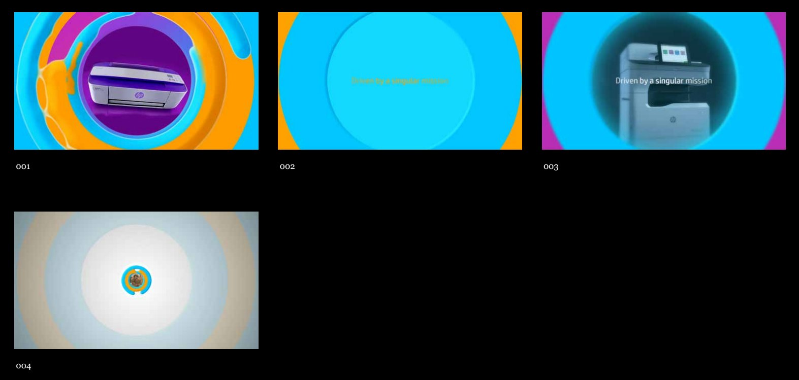
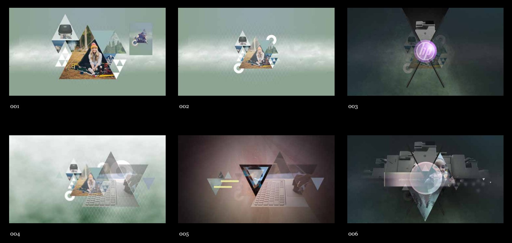

agency:collective · Motion · 2018
HP Brand Entrance Video
Styleframes in three visual directions for an HP brand entrance video.
Role
Creative Director, agency:collective
Client
HP
Year
2018
Scope
Styleframes, motion direction

The problem
HP needed a brand entrance video. The March 2018 styleframe presentation set out three possible visual directions for it.
The approach
Version A, Shape Reveal Dots, builds scenes from clusters of photographic dots that resolve into HP devices and on-screen messaging.
Version B, Pop Color, uses concentric rings of saturated color that open onto HP printers and the line "Driven by a singular mission."
Version C, Dynamic Reveal, uses triangular cut-outs and layered photography to reveal people, devices and the HP mark.


Leadership
Directed the creative for the styleframe presentation, setting out and presenting three alternative directions for the video.